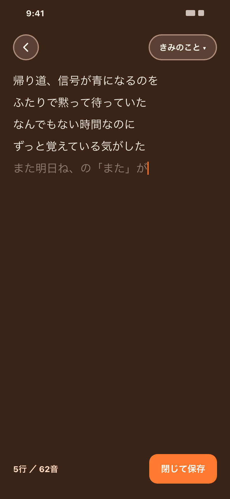
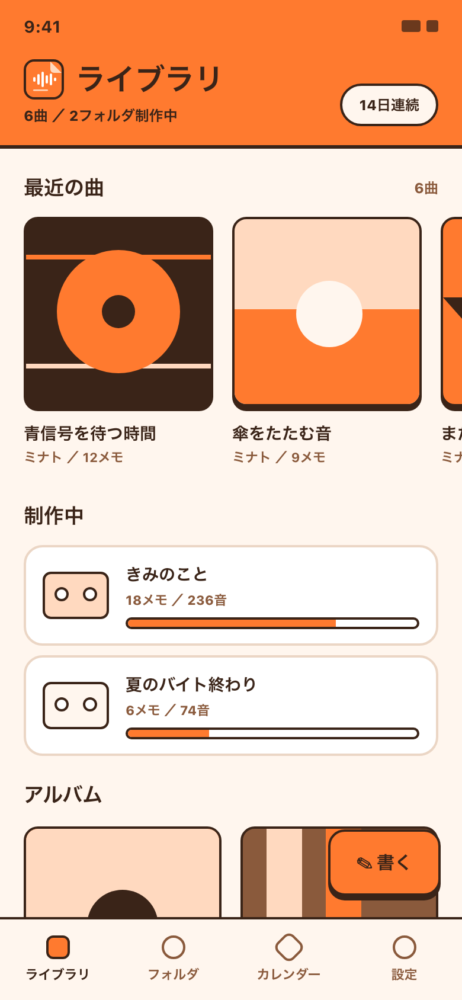
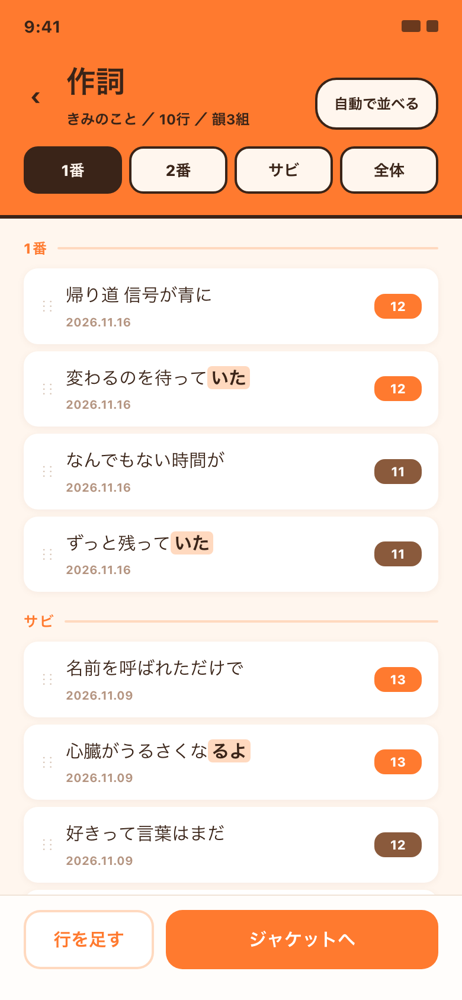
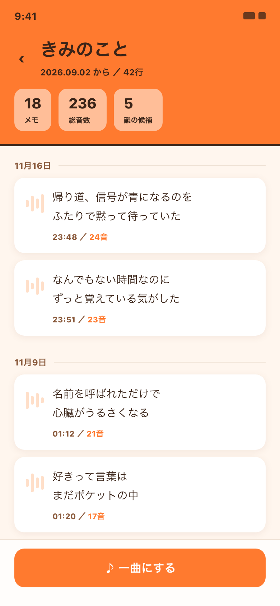
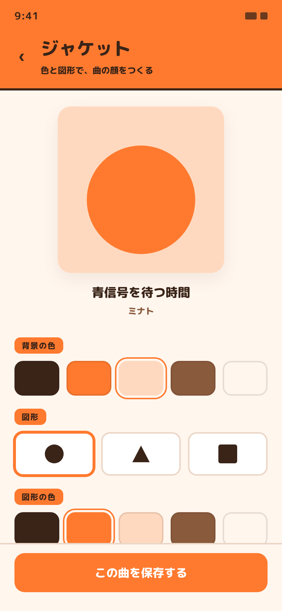
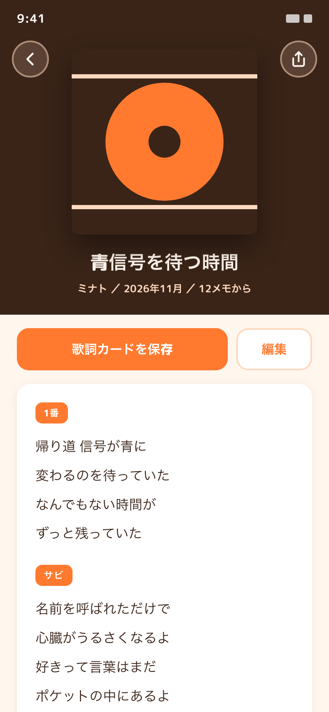

メモ歌詞
ふと浮かんだ記憶のかけらを、
あなただけの一曲にするアプリ
メモ歌詞
思いついたメモが、一曲の歌詞になる



ふと浮かんだ記憶のかけらを、
あなただけの一曲にするアプリ
メモ歌詞
思いついたメモが、一曲の歌詞になる



メモ歌詞
「メモ」と「歌詞」を重ねた名前です。思いついた言葉をメモのように書きためると、それが歌詞になる、という作品の流れをそのまま名前にしています。
ふと浮かんだ記憶のかけらを、あなただけの一曲にするアプリです。
思いついた言葉をメモのように書きためると、アプリが音数や韻をもとに1番・2番・サビへ並べ、歌詞の形に整えます。完成した曲はCDジャケットとしてライブラリに並び、アルバムのように見返すことができます。継ぎはぎのまま終わっていたメモを一曲にまとめ、音楽と記憶の結びつきを形にします。
私は音楽が好きで、浮かんだ言葉をメモに歌詞として書きためていました。しかし、書いた時点の記憶はすぐに薄れてしまい、メモは継ぎはぎのまま一曲として完成しませんでした。記憶は「その瞬間」にしか言葉にならないのに、それを形にする道具がないという課題があります。このアプリでは、断片的な記憶をその場で書き留め、音楽という形にまとめることで、記憶を残し、あとから見返せるようにします。
起動してすぐ全画面で書ける。閉じると自動で保存。
音数と韻をもとに、1番・2番・サビへ自動で配置。
音楽は、聴いた時期の記憶と強く結びつくメディアです。このアプリはその関係を逆向きにたどり、曲から記憶を思い出すのではなく、記憶から曲をつくります。歌詞の一行一行がいつの記憶から生まれたかをたどれる仕組みにより、「記憶と音楽の結びつき」を体験として表現します。
歌詞の各行には、元になったメモの日付が付きます。曲詳細では、その曲になった記憶の日付が一覧で見られます。
この2行 → 2026.11.09 のメモから
| 2026.11.16 | 帰り道、信号が… |
| 2026.11.09 | 名前を呼ばれた… |
| 2026.10.28 | 改札の前で手を… |
浮かんだ言葉を歌詞として書きためてきた、私自身が最初のユーザーです。
恋愛などで気持ちがあふれ、言葉を一気に書き出したい人。



起動直後に入力画面を表示し、閉じると自動で保存します。
「誰の・何の曲か」の単位でメモをためます。
改行や句読点でメモを行単位に分けます。
各行のモーラ数を表示します。「きゃ」で1拍、「っ」「ー」「ん」も1拍と数える、歌のリズムの単位です。
断片を1番・2番・サビの枠へ自動で並べます。
ドラッグで行を入れ替える、編集する、削除することができます。
行末の母音がそろう行どうしを強調します。
色と図形（まる・さんかく・しかく）を組み合わせて作ります。画像生成AIは使いません。
完成した曲をジャケットで一覧にします。
複数の曲を1枚のアルバムにまとめます。
歌詞の各行がいつのメモから来たかをたどれます。
書き続けた日数を見える形にし、毎日開く理由をつくります。
曲詳細の共有から、OS標準の共有で画像として保存、またはテキストとしてコピーします。
設定から画面の明るさを切り替えます。
入力したメモ
帰り道、信号が青に変わるのを待っていた。なんでもない時間が、ずっと残っていた。
行に分けて音数を表示
帰り道 信号が青に 12
変わるのを待っていた 12
なんでもない時間が 11
ずっと残っていた 11
音数が近い行は対に、行末の母音がそろう行は下線で示します。
作詞画面。音数バッジ・韻の下線・元メモの日付
外部の生成AI APIは使いません。すべてブラウザの中で動く自作の仕組みで処理します。
音楽アプリのようにジャケットが主役。ボタンと数字だけカセットのキー風に立体感を出し、カードは淡い枠で目に優しく。
起動時は iPhone のジャーナルアプリのように、開いてすぐ書ける。ホームは Apple Music のライブラリのように、ジャケットが並ぶ。
メイン#FF7A2F
サブ#FFD9BF
背景#FFF6EE
文字#3A2418
補足文字#8A5A3C
オレンジ地の文字は白ではなくこげ茶（約5.6:1）。白文字だと約2.6:1で読みにくいため。
ボタン＝枠＋下の影／音数＝枠付きバッジ／対の行＝オレンジ／韻＝下線
ロゴは「波形ノート」。アイコン全体が角の折れたメモ用紙で、文字の行が音の波形に変わっていく形です。ロゴタイプは「メモ」のあとにオレンジの「歌詞」。フォントは M PLUS Rounded 1c。
| コンテスト | SEIKA AWARD 2027（京都精華大学） |
| テーマ | 記憶 |
| 応募期間 | 2026年12月1日〜2027年1月14日 17:00 |
| 部門 | メディア部門（プログラミング作品）または授業作品部門 |
| 規定 | 生成AIツールを使用した作品は応募不可 |
| 11/16〜11/22 | 主催者への問い合わせ、企画書の作成、講師とのすり合わせ |
| 11/23〜12/6 | プロトタイプ作成、歌詞化ロジックの検証 |
| 12/7〜1/4 | 本番版の自作実装 |
| 1/5〜1/10 | 仕上げ、デモ動画と説明資料の作成 |
| 1/11〜1/14 | 予備期間、提出 |
生成AIの規定の範囲、応募部門、提出形式、権利の扱い。
応募部門、授業の課題と応募作品を同一にしてよいか。
設定にログアウトとアカウント削除を置いているが、ブラウザ内で完結する方針との関係（ログインの要否、データの保存先）を決める。